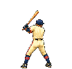

ORIGINAL NINE-FRAME PITCHER/BATTER CAMERA
BATTER ANIMATION REVIEW
The field view uses a tight home-plate camera with a large side/back three-quarter batter beside the plate and a smaller pitcher downfield. The close view exposes the same native sprite frames at readable scale. Use game speed to judge the compact swing and held high finish, slow review to inspect transitions, or choose any pose directly.

1 / 9 — READY
Game speed uses the live swing thresholds: 70 ms load, 65 ms stride, 60 ms plant, 60 ms swing, 60 ms contact, 70 ms extension, then a readable high-finish hold before reset.